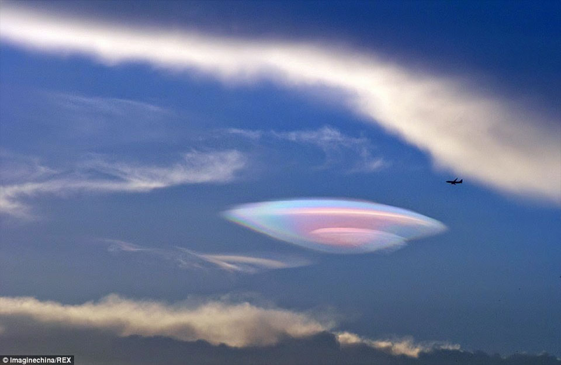

Area 51 Uncensored
UFOs
The term UFO–or unidentified flying object–refers to a suspected alien spacecraft, although its definition encompasses any unexplained aerial phenomena. UFO sightings have been reported throughout recorded history and in various parts of the world, raising questions about life on other planets and whether extraterrestrials have visited Earth.
Interview with a former employee from Area 51
"No one really knew we existed," said Thornton "T.D." Barnes, 72, a former special-projects engineer at Area 51. "Even our wives didn't know where we were going when we left Monday morning and came back Friday evening."
As an electronics engineer for NASA, he worked on the country's first rocket plane, the X-15, the Apollo space capsule and lunar lander research vehicles.
At Area 51, he helped develop the A-12 OXCART, a super-secret spy plane built by the Lockheed Corporation. Barnes said his colleagues conducted 2,850 test flights of the A-12 out of Area 51.
How Do You Think Rumors Started?
No ETs, No Alien Spacecraft, No Underground Tunnels?

Possible explanations for UFO sightings and alien abductions

UFO reports have varied widely in reliability, as judged by the number of witnesses, whether the witnesses were independent of each other, the observing conditions (e.g., fog, haze, type of illumination), and the direction of sighting. Typically, witnesses who take the trouble to report a sighting consider the object to be of extraterrestrial origin or possibly a military craft but certainly under intelligent control. This inference is usually based on what is perceived as formation flying by sets of objects, unnatural—often sudden—motions, the lack of sound, changes in brightness or colour, and strange shapes.
That the unaided eye plays tricks is well known. A bright light, such as the planet Venus, often appears to move. Astronomical objects can also be disconcerting to drivers, as they seem to "follow" the car. Visual impressions of distance and speed of UFOs are also highly unreliable because they are based on an assumed size and are often made against a blank sky with no background object (clouds, mountains, etc.) to set a maximum distance. Reflections from windows and eyeglasses produce superimposed views, and complex optical systems, such as camera lenses, can turn point sources of light into apparently saucer-shaped phenomena. Such optical illusions and the psychological desire to interpret images are known to account for many visual UFO reports, and at least some sightings are known to be hoaxes. Radar sightings, while in certain respects more reliable, fail to discriminate between artificial objects and meteor trails, ionized gas, rain, or thermal discontinuities in the atmosphere.